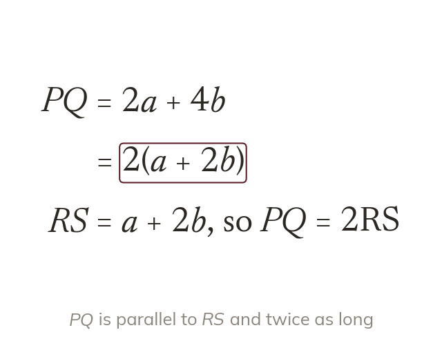
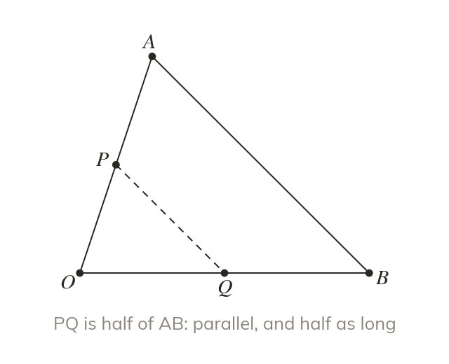
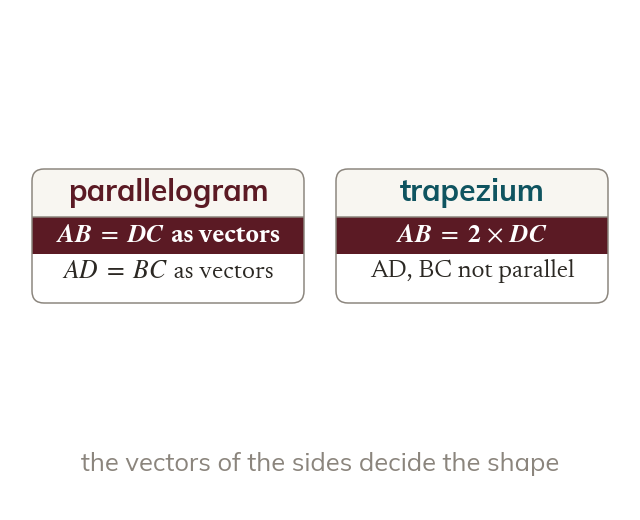
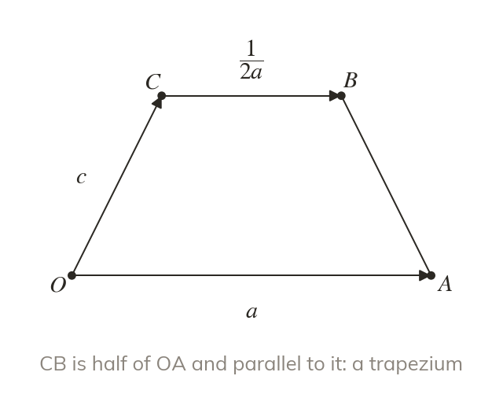

Parallel means a multiple
Two lines are parallel when one vector is a scalar multiple of the other. A common factor may need taking out first.
Vectors can prove that two lines are parallel without measuring an angle. Today we write proofs that end with a scalar multiple and a sentence.
Work down the page at your own pace. Write every answer in your book first, then click to check it.
Read each card, then follow the worked examples one step at a time.

Two lines are parallel when one vector is a scalar multiple of the other. A common factor may need taking out first.

A proof ends by stating the multiple in words. The midpoints of two sides of a triangle give the classic example.
Pick an answer. If it's wrong, the feedback tells you which mistake it was.
Read each card, then follow the worked examples one step at a time.

A parallelogram has opposite sides that are equal vectors. A trapezium has one pair parallel but not equal.

Every side is first written in terms of a and Comparing the opposite pairs then decides the shape.
Pick an answer. If it's wrong, the feedback tells you which mistake it was.
Finished? Next lesson: 11H.8.8 Proving Points Collinear.
Log in, then search for a code to practise that skill.
Videos, worksheets and more on each part of this lesson.